Big Data: Speeding up computation
Lviv University
Computational improvements
Moore’s Law
Definition (1965)
Number of transistors in an integrated circuit (IC) doubles about every two years.
Moore’s Law
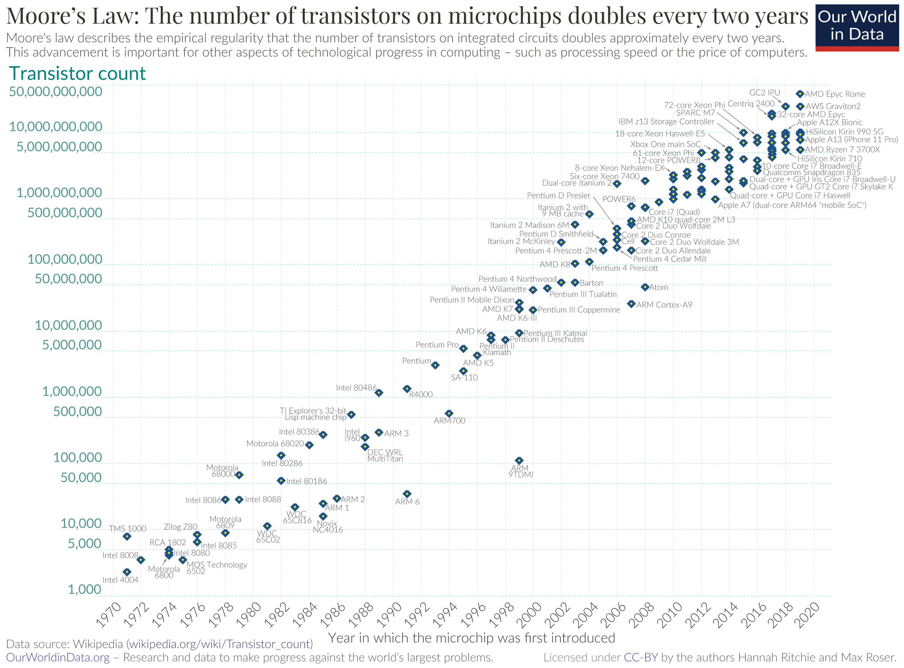
Moore’s Law
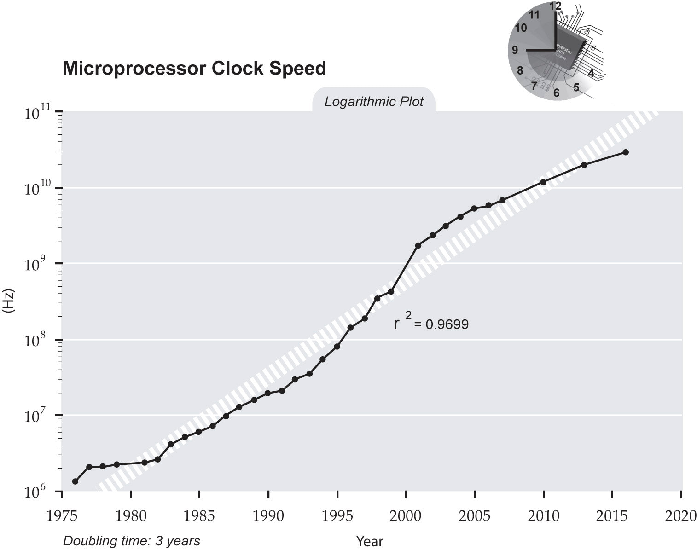
Moore’s Law
Trends
- Gordon Moore: Moore’s law will end by around 2025.
- Nvidia CEO Jensen Huang: declared Moore’s law dead in 2022.
Pat Gelsinger, Intel CEO, end of 2023
We’re no longer in the golden era of Moore’s Law, it’s much, much harder now, so we’re probably doubling effectively closer to every three years now, so we’ve definitely seen a slowing.
Edholm’s law
Definition (2004)
- three categories of telecommunication, namely
- wireless (mobile),
- nomadic (wireless without mobility)
- and wired networks (fixed),
- the bandwidth and data rates double every 18 months, which has proven to be true since the 1970s
Edholm’s law
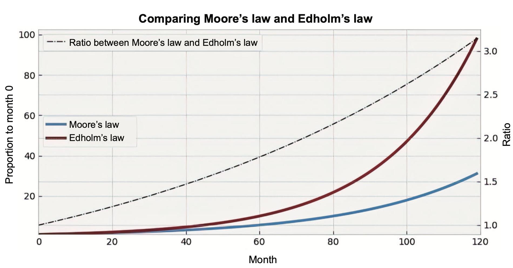
Edholm’s law
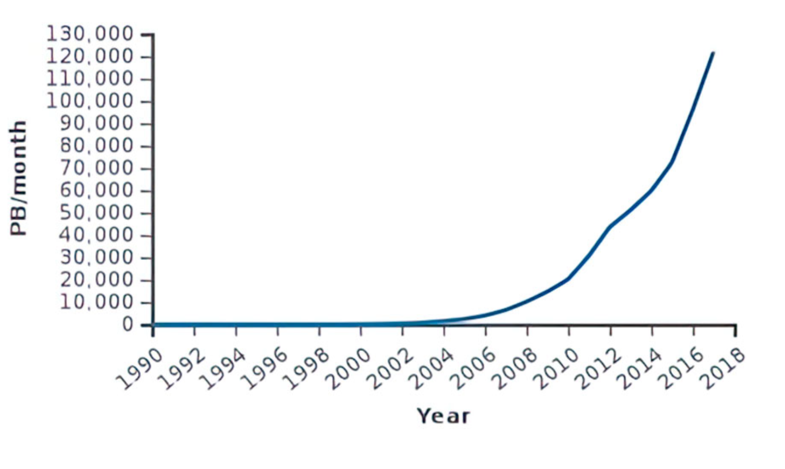
Data deluge
- 90% of data humankind has produced happened in the last two years.
- 80% of data could be unstructured
- 99% of data produced is never analyzed
Dennard scaling
Definition (Robert Dennard, 1974)
As transistors get smaller, their power density stays roughly constant – smaller transistors run at proportionally lower voltage and current.
Why it mattered
For ~30 years this is what let clock speeds climb alongside Moore’s Law: each new process node gave you more transistors and a higher safe clock at the same power budget. Software got faster for free.
The power wall
Dennard scaling broke down (~2006)
Below roughly 65 nm, leakage current and heat stopped shrinking with the transistors. More switching in the same area now means more power and more heat than the chip can dissipate.
Consequence
Clock speed hit a ceiling. The Pentium 4 reached ~3.8 GHz in 2004; twenty years later, mainstream CPUs still run at ~3–5 GHz.
“The Free Lunch Is Over” – Herb Sutter, 2005
Single-thread performance now grows only a few percent per year. Making code faster became a parallelism problem, not a “wait for next year’s CPU” problem.
The multicore pivot
Same transistors, spent differently
Moore’s Law kept delivering transistors – vendors just stopped spending them on faster cores and started spending them on more cores.
- 2005: first mainstream dual-core desktop chips (Athlon 64 X2, Pentium D)
- today: 8–16 cores on a laptop, 64–192 in a server socket
Beyond more cores
Data-level parallelism: SIMD
One instruction, many elements:
- SSE (128-bit)
- AVX2 (256)
- AVX-512 (512)
- ARM NEON / SVE
Domain-specific hardware:
- GPUs (thousands of simple cores, huge memory bandwidth)
- TPUs (matrix-multiply units)
- FPGAs.
What to do now?
Choices
- Use all the cores – threads / processes (next section)
- Use SIMD – via vectorised libraries: NumPy, Polars, DuckDB
- Use accelerators – GPUs for the right workloads
- Be smart – better algorithms, cache-friendly data layout, better data formats
Multithreading vs multiprocessing
Core counts
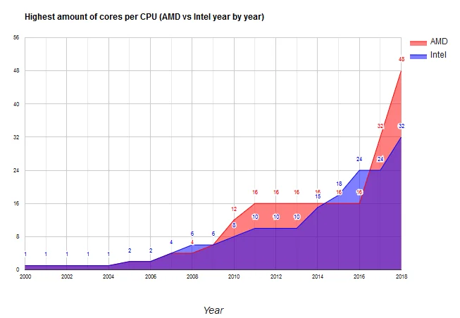
Concurrency vs Parallelism
Concurrency
Individual steps of both tasks are executed in an interleaved fashion
Parallelism
Task statements are executed at the same time.
Process
Definition
A process can be defined as an instance of a running program with its own memory.
Alternatively: a context maintained for an executing program.
Processes have:
- lifetimes
- parents
- children.
- memory/resources allocated.
Process
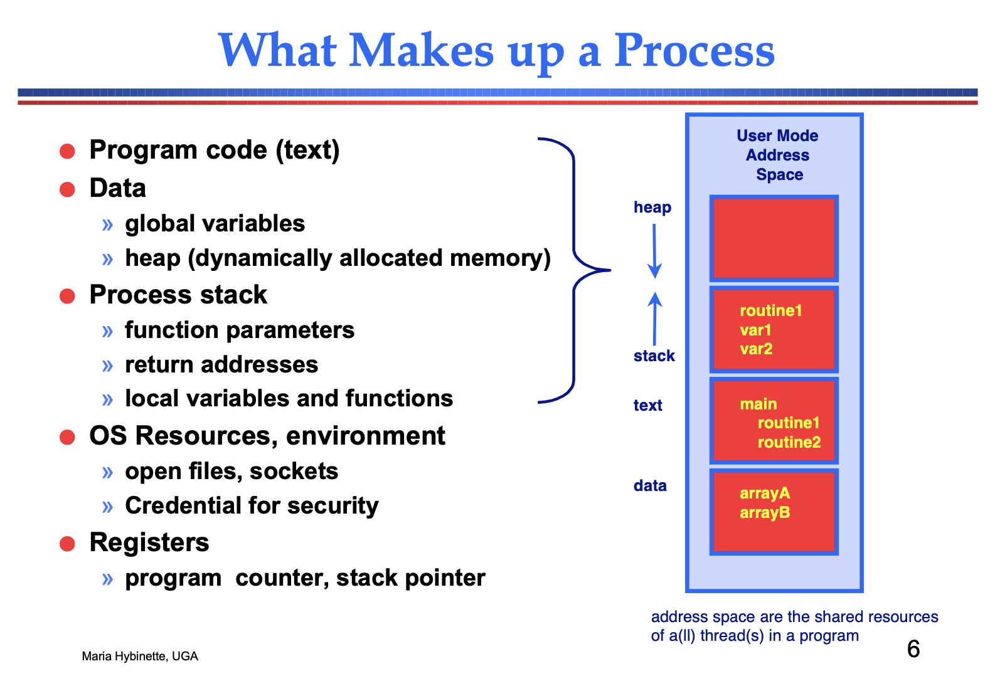
Threads
Definition
A lightweight unit of execution within a process that can operate independently.
Thread is a basic unit to which the operating system allocates processor time.
Managed with help of thread context, which consists of processor context and information required for thread management.
Threads
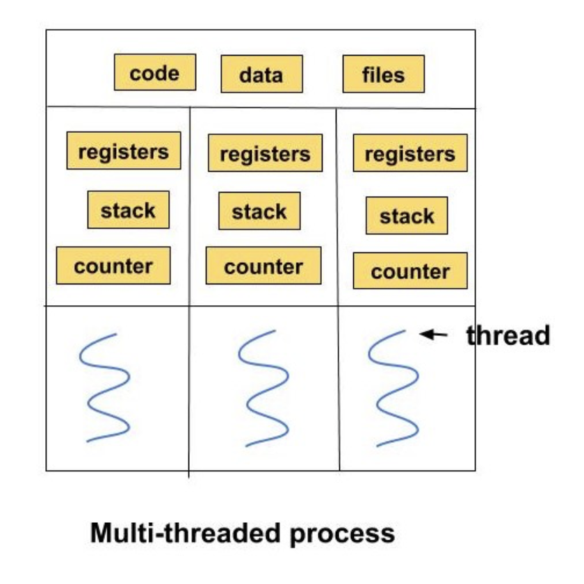
Comparison table
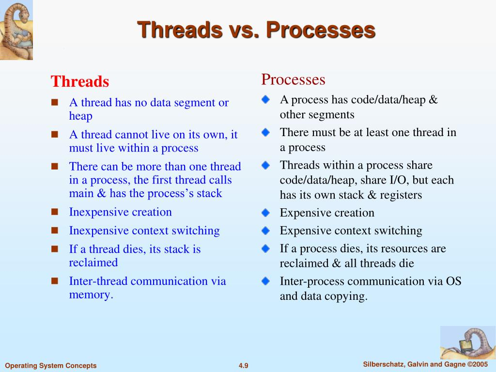
Green threads/Coroutines
Definition
These are threads managed by the process runtime, multiplexed onto OS threads.
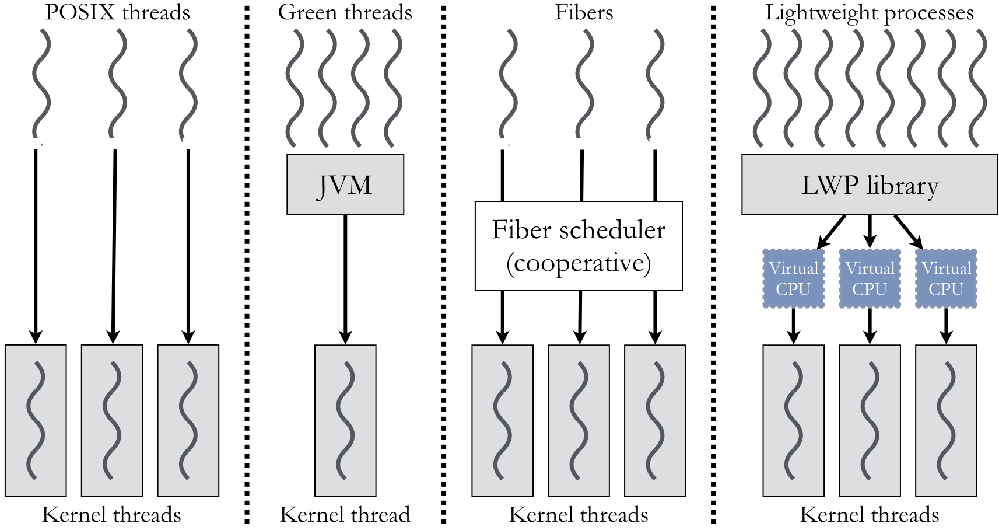
The GIL
Global Interpreter Lock
CPython uses one lock that a thread must hold to execute Python bytecode.
- protects reference counts and interpreter state from data races
- consequence: only one thread runs Python bytecode at a time (in the default build)
So what does threading give you?
Concurrency, not CPU parallelism, for pure Python code – unless you run a free-threaded build (below).
When threads still help
The GIL is released…
- during blocking I/O (network, disk, database) – so I/O-bound work does scale on threads
- inside C extensions that explicitly drop it: NumPy, parts of pandas, scikit-learn,
zlib, Numbanogil=True
Data-science nuance
A NumPy/BLAS-heavy workload can get real speedup from threading – the heavy lifting runs with the GIL released.
multiprocessing
Real parallelism for pure-Python CPU work
Each process gets its own interpreter and its own GIL.
…but it isn’t free
- process startup cost
- everything crossing the boundary is pickled – expensive for large arrays / DataFrames
concurrent.futures & asyncio
concurrent.futures – one API, two backends
asyncio
Single thread, cooperative multitasking. Built for thousands of concurrent I/O calls (HTTP, DB). Never for CPU-bound work.
asyncio: the event loop
Cooperative multitasking, one thread
An event loop runs coroutines. A coroutine runs until it hits await on something not yet ready (a socket, a timer), then yields control back to the loop, which runs whatever else is ready.
- no preemption – a coroutine holds the CPU until it chooses to
await - no GIL contention, no per-thread stack – scales to tens of thousands of open connections
- one blocking call, or one CPU-heavy stretch with no
await, stalls everything
asyncio: in practice
Issues
- “function colours” –
asyncis contagious; you need async-native libraries (aiohttp,httpx,asyncpg). A normal blocking call freezes the loop. - push unavoidable blocking / CPU work off the loop with
await asyncio.to_thread(fn, ...)orloop.run_in_executor(...).
asyncio vs threads
Same goal (I/O concurrency), different trade-offs
threading |
asyncio |
|
|---|---|---|
| scheduling | preemptive (OS) | cooperative (await) |
| memory per task | ~MB (stack) | ~KB |
| scales to | thousands | tens of thousands |
| special libraries | not needed | yes (async drivers) |
| accidental blocking | slows one thread | freezes everything |
Amdahl’s law
The ceiling on speedup
\(S(n)\) is the speedup with \(n\) workers: \(S(n) = T(1)\,/\,T(n)\) – single-worker time divided by \(n\)-worker time.
Normalise \(T(1) = 1\), split into a serial part \(1-p\) and a parallel part \(p\). With \(n\) workers the parallel part takes \(p/n\) while the serial part is unchanged: \[ T(n) = (1-p) + \frac{p}{n}, \qquad S(n) = \frac{1}{(1-p) + \dfrac{p}{n}}. \]
As \(n \to \infty\), \(S \to \dfrac{1}{1-p}\): a 5% serial fraction caps you at 20x, no matter the hardware.
Amdahl’s law
Gustafson’s law
A different question (Gustafson, 1988)
Amdahl: same problem, more cores – how much faster? Gustafson: more cores, same wall-clock time – how much more work?
With more cores you scale the problem up (finer mesh, more data, more iterations). The serial part stays roughly fixed, so its relative weight shrinks as the problem grows.
Scaled speedup
\[ S(n) = (1-p) + p\,n \] Linear in \(n\), slope \(p\) – no hard ceiling, because \(p\) is now the parallel fraction of the bigger workload.
Amdahl vs Gustafson
Sharing data without pickling
Zero-copy between processes
multiprocessing.shared_memory.SharedMemory– back a NumPy array with a shared buffer- Arrow IPC – the on-wire format is the in-memory format, so no serialization step
- memory-mapped files (
np.memmap)
This is how Dask and Ray move large arrays between workers cheaply.
Removing the GIL: free threading
Free-threaded CPython (PEP 703)
A build with the GIL compiled out.
- experimental in 3.13, officially supported in 3.14 (PEP 779)
- still opt-in (
python3.14t); the GIL build stays the default - single-threaded overhead: ~40% in 3.13 -> under ~10% in 3.14
- pure-Python threads finally run in parallel
How to check if present?
sys._is_gil_enabled()
Removing the GIL: sub-interpreters
Multiple interpreters, one process (PEP 684, PEP 734)
Each interpreter gets its own GIL, so several can run Python bytecode at once – without the cost of separate OS processes.
- per-interpreter GIL: C-API since 3.12 (PEP 684)
concurrent.interpreters– a pure-Python API, new in 3.14 (PEP 734)- talk over channels / shared
memoryview; no pickling on the fast path
Which approach?
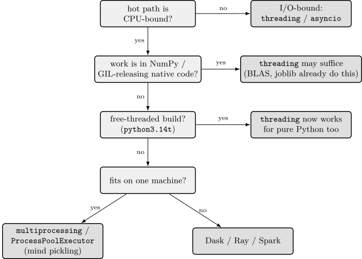
Programming paradigms
Imperative
Wikipedia definition
A programming paradigm of software that uses statements that change a program’s state.
Imperative program is a step-by-step description of program’s algorithm.
Examples
- Fortran
- COBOL
- C
- Python
- Go
Imperative
Cons
- Difficult to parallelize
- Lots of state management
Pros
- Intuitive concept, maps well to how people think, program as a recipe.
- Easy to optimize by the compiler
Functional
Wikipedia definition
A programming paradigm where programs are constructed by applying and composing functions.
Examples
- ML (Ocaml)
- Lisp
- Haskell
- Julia
Functional
Cons
- Often non-intuitive to reason about
- Depending on a specific algorithm, might be slower
Pros
- Easier to parallelize
- Lend themselves beautifully to certain types of problems
Object-oriented
Wikipedia definition
A programming paradigm based on the concept of objects, which can contain data and code: data in the form of fields (often known as attributes or properties), and code in the form of procedures (often known as methods).
Examples
- Smalltalk
- Java
- C++
- Python
- C#
Object-oriented
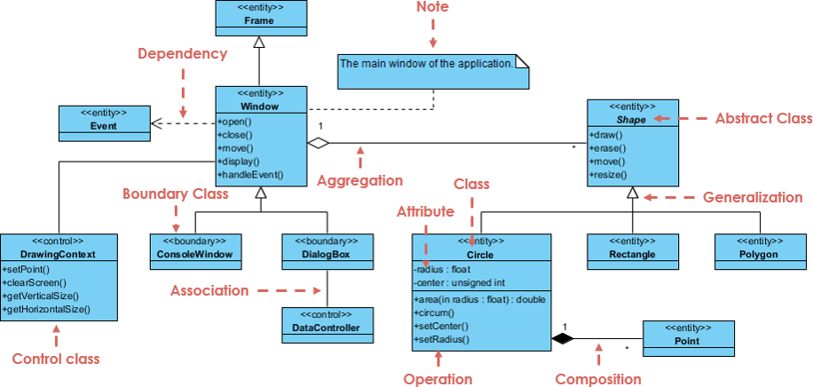
Object-oriented
Cons
- Does not map well to many problems
- Lots of state management
Pros
- Intuitively easy to grasp, as human thinking is largely noun-oriented
- Useful for UIs
Symbolic
Wikipedia definition
A programming paradigm in which the program can manipulate its own formulas and program components as if they were plain data.
Examples
- Lisp
- Prolog
- Julia
Lisp
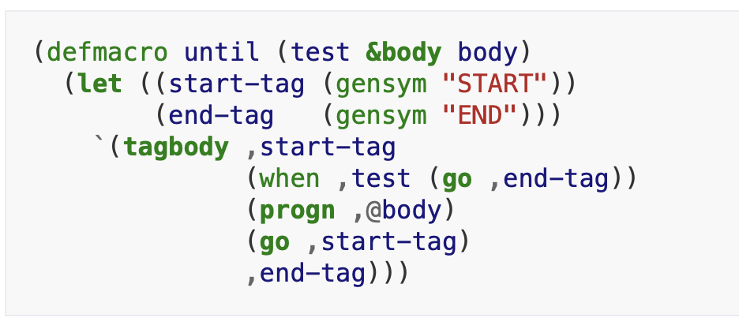
Prolog
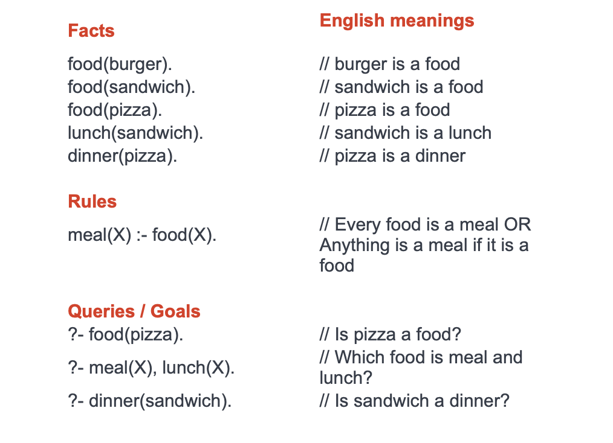
Typing
Typing
Static vs dynamic
- static: types are known and checked before running the program
- dynamic: types become known when the program is running
Strong vs weak
- strong: variable types are not changed easily
- weak: types can be changed by the compiler if necessary
Typing
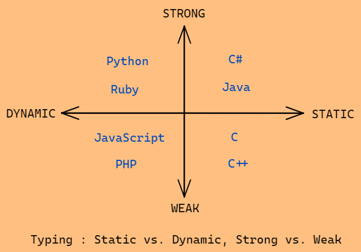
Typing: when are types checked?
Three timings
- compile time – C, Rust, Java, Haskell: type errors are rejected before the program runs
- run time – Python, Ruby: an operation fails when it is actually attempted
- gradual – optional annotations checked by a separate tool, not the interpreter: Python +
mypy/pyright/ty, or TypeScript over JavaScript
Manifest vs inferred
Do you write the types (int x = 3) or does the compiler work them out? Full inference: Haskell, ML, mostly Rust. Partial: C++ auto, C# var, Python type checkers.
Typing: nominal vs structural
What makes two types “the same”?
- nominal – the declared name must match (Java, C#, Rust): a class implements an interface only if it says so
- structural – the shape must match (Go interfaces, TypeScript, Python
Protocol): if it has the right methods, it fits
“Duck typing” is structural typing checked at run time.
Typing & performance
Why static types make code faster
- fixed types let the compiler pick a machine representation (a 64-bit int, not a boxed
PyObject) and lay data out contiguously - no runtime dispatch –
a + bbecomes one instruction instead of “look up__add__, check types, box the result”
Python’s hints don’t do this
def f(x: int) -> int: is erased at run time – CPython ignores it. The speed-up comes only when a tool acts on the types: Cython, mypyc, Numba.
Memory management
Manual
- C/C++
- Pascal
- Forth
- Fortran
- Zig
Automatic
- Lisp
- Java
- Python
- Go
- Julia
Memory management
Code
import os
import gc
import psutil
proc = psutil.Process(os.getpid())
gc.collect()
initial_memory = proc.memory_info().rss
## Allocate memory by creating large lists
foo = ['abc' for _ in range(10**7)]
allocated_memory = proc.memory_info().rss
## Deallocate memory
del foo
gc.collect()
final_memory = proc.memory_info().rssMemory management
Print memory statistics
increase = lambda x2, x1: 100.0 * (x2 - x1) / initial_memory
print("Allocated Memory Increase: %0.2f%%" % increase(allocated_memory, initial_memory))
print("Memory After Deletion: %0.2f%%" % increase(final_memory, allocated_memory))
>>> Allocated Memory Increase: 23.35%
>>> Memory After Deletion: -10.78%Memory management
Python internals
- pools
- blocks
- arenas
Memory management
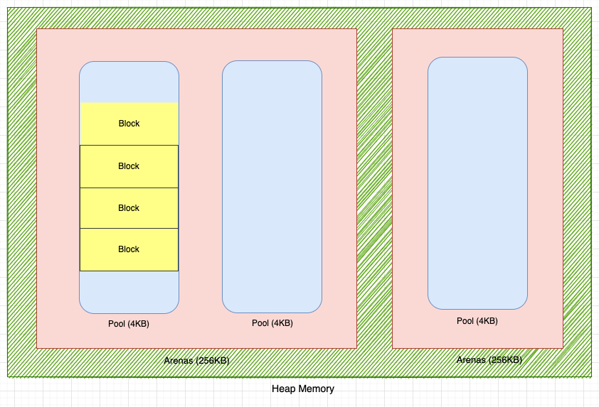
The memory hierarchy
The memory wall
Why caches exist
For decades CPU throughput grew far faster than DRAM latency. That widening gap – the memory wall – is why modern chips spend most of their transistors on cache.
Consequence
“Speeding up single-node computation” is very often really: stop waiting on memory.
The hierarchy
Latency ladder (rough, modern x86)
| Level | Size | Latency |
|---|---|---|
| register | ~KB | < 1 ns |
| L1 cache | ~32-64 KB | ~1 ns (~4 cycles) |
| L2 cache | ~256 KB - 2 MB | ~4 ns |
| L3 cache | ~8-64 MB | ~15 ns |
| DRAM | GBs | ~80-100 ns |
| NVMe SSD | TBs | ~100 us |
| network / spinning disk | – | ms+ |
Latency ladder

Cache lines
Memory moves in blocks
The CPU never fetches a single byte – it pulls in a cache line (64 bytes) at a time.
Locality
- spatial – touch an address and you’ll likely touch its neighbours: lay data out contiguously, walk it in order
- temporal – touch an address and you’ll likely touch it again soon: reuse before it’s evicted
Sequential vs strided
Same element count, very different speed
Summing down columns of a row-major array can be several times slower, purely from cache misses – the arithmetic is identical.
Row-major vs column-major
It’s a layout question, everywhere
- NumPy:
order='C'(row-major) vsorder='F'(column-major) – iterate along the contiguous axis - array-of-structs vs struct-of-arrays – SoA keeps each field contiguous
- columnar formats (Parquet, Arrow – Lec 1) are SoA on disk: analytics scans touch a few columns over many rows, so column layout means fewer cache lines read
Python object overhead
Why a plain list is the slow default
- a Python
intis a heap object: ~28 bytes, not 8 - a
listof \({10}^7\) ints is \({10}^7\) pointers, each to a boxed int scattered across the heap – terrible locality - a NumPy
int64array is 8 bytes/element in one contiguous block
The general lesson
Vectorised NumPy/pandas isn’t just “C is fast” – it’s contiguous, unboxed data that the cache can stream.
Views vs copies
Allocation is not free
- NumPy slicing returns a view – no copy, no allocation
.copy(), fancy / boolean indexing,astype, most reshapes that can’t alias -> a new allocationnp.shares_memory(a, b)to check- pandas’
SettingWithCopyWarningis exactly this distinction leaking through
Code execution
Python Options
| Libraries | Low-level langs | Alt Python Impls | JIT |
|---|---|---|---|
| NumPy, SciPy |
C, Rust, Cython, PyO3 |
PyPy, Jython |
Numba, PyPy |
Interpreters
Wikipedia definition
An interpreter is a computer program that directly executes instructions written in a programming or scripting language, without requiring them previously to have been compiled into a machine language program.
Examples
- Python
- Ruby
- Lua
- Javascript
CPython
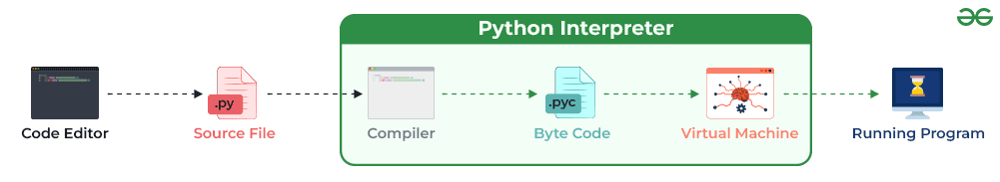
Flow
- Read Python code
- Convert Python into bytecode
- Execute bytecode inside a VM
- VM converts bytecode to machine code
CPython
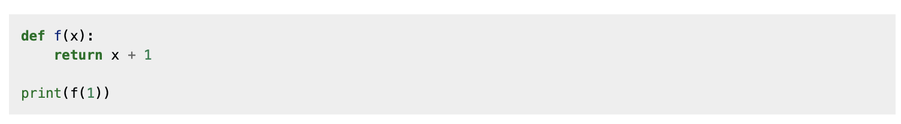
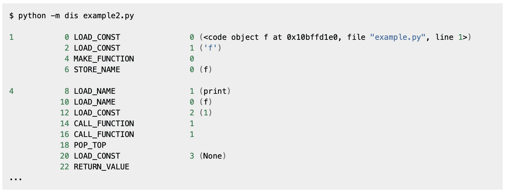
Compilers
Wikipedia definition
Source code is compiled - in this context, translated into machine code for better performance.
Examples
- C/C++
- Go
- Python (to intermediate VM code)
- Java
- Cython
Compilers
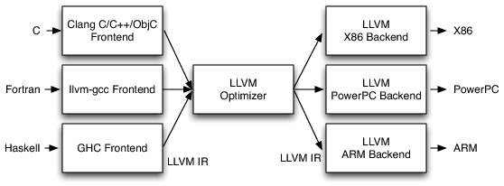
Cython
Definition
Cython is an optimising static compiler for the Python programming language.
- converts Python code to C
- supports static type declarations
Cython
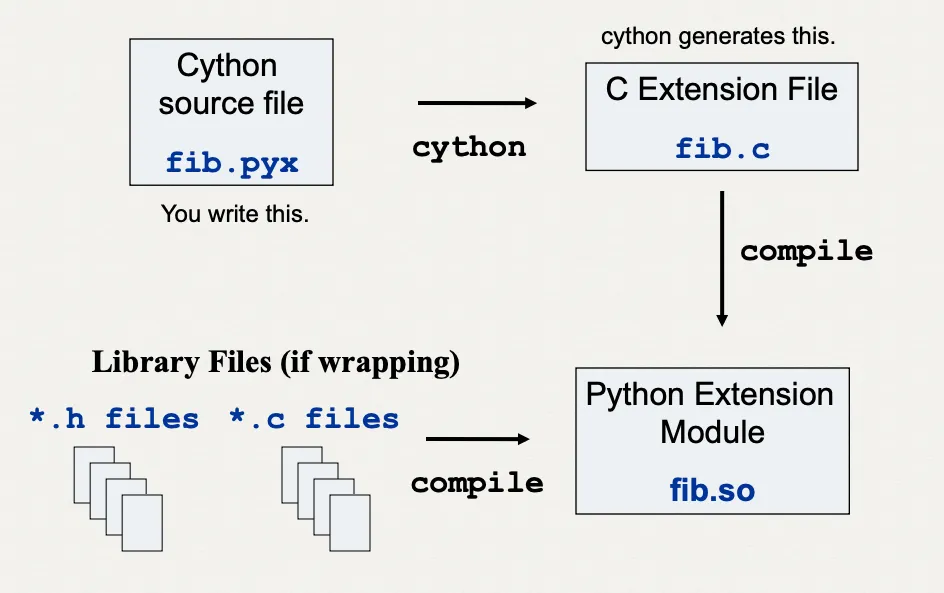
Cython
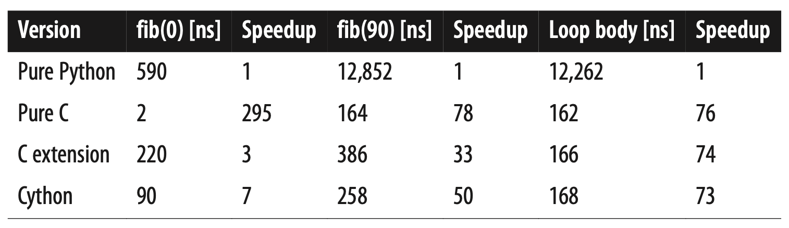
Cython
Python code
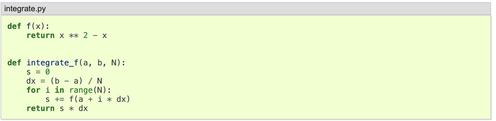
Cython
Annotated Python code
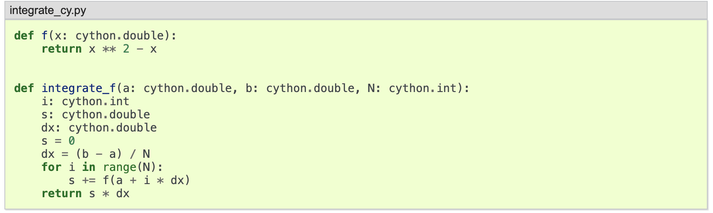
Cython
Cython code
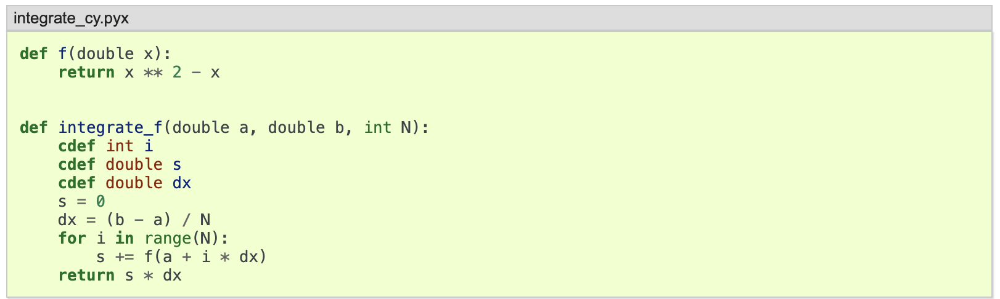
Parallel Cython
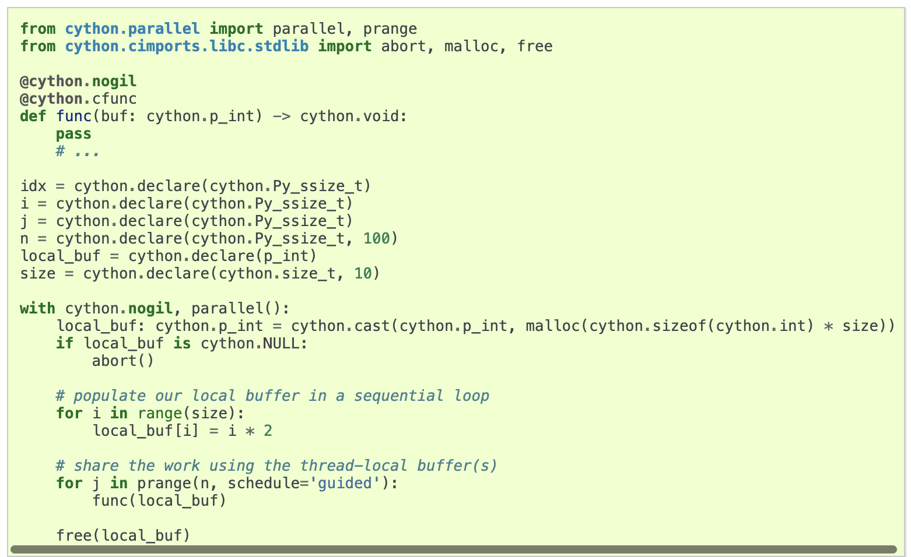
Parallel Cython
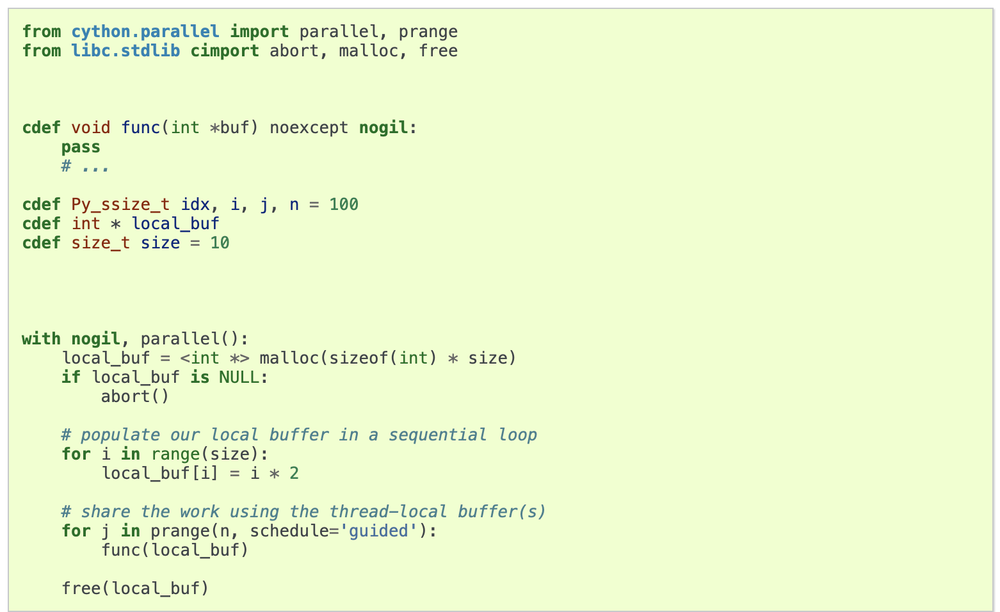
JIT
Wikipedia definition
A compilation (of computer code) during execution of a program (at run time) rather than before execution.
Features
- warm-up time: JIT causes a slight to noticeable delay in the initial execution of an application, due to the time taken to load and compile the input code.
- statistics collection: performed by the system during runtime, shows how the program is actually running in the environment it is in; helps JIT to rearrange and recompile for optimum performance.
- particularly suited for dynamic programming languages
JIT
Examples
- HotSpot Java Virtual Machine
- LuaJIT
- Numba
- PyPy
Numba
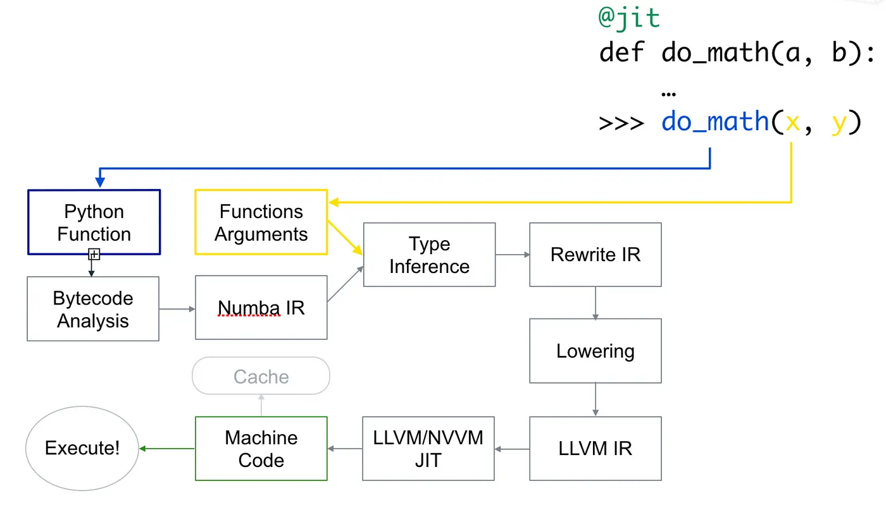
Numba
Description
- Numba translates Python byte-code to machine code immediately before execution to improve the execution speed.
- For that we add a
@jitdecorator - Works well for numeric operations, NumPy, and loops
Numba
Steps
- read the Python bytecode for a decorated function
- combine it with information about the types of the input arguments to the function
- analyze and optimize the code
- use the LLVM compiler library to generate a machine code version of the function, tailored to specific CPU capabilities.
Numba
Works great
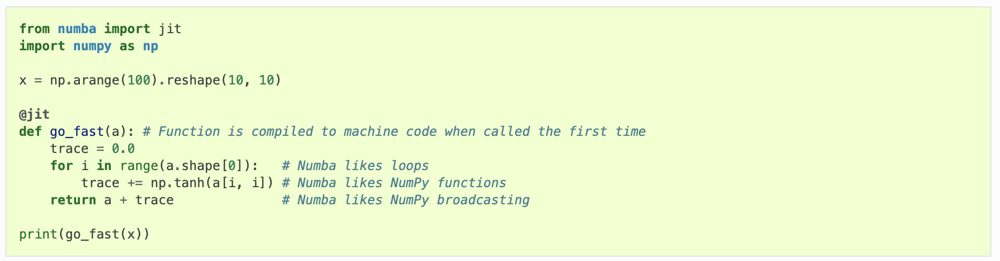
Numba
Nope
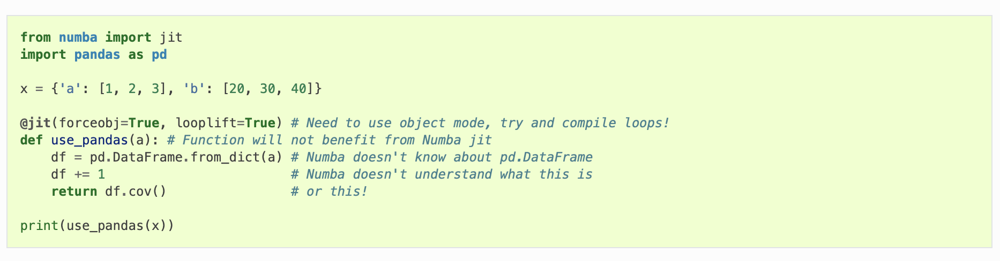
Numba
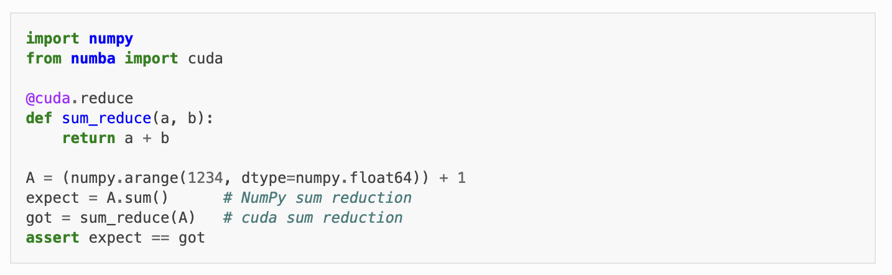
Numpy
Why so fast?
- Optimized C code
- Densely packed arrays
- Uses BLAS - Basic Linear Algebra Subroutines.
Rust/PyO3 example
Rust/PyO3 example
Description
We show an example of a simple algebraic cipher that utilizes PyO3 bindings to speed up encoding/decoding.
Cipher definition
The basic mechanism for encrypting a message using a shared secret key is called a cipher (or encryption scheme)
Rust/PyO3 example
Definition
Encryption and decryption use the same secret key.
Examples
- AES
- Salsa20
- Twofish
- DES
Rust/PyO3 example
Types
- block ciphers
- stream ciphers
- hash functions
Rust/PyO3 example
Overview
\[ f: \mathcal{K}\times\mathcal{D} \rightarrow C \] where
- \(\mathcal{K}\) is key space
- \(\mathcal{D}\) is domain (or message space)
- \(\mathcal{C}\) is co-domain (or ciphertext space)
Rust/PyO3 example
Shannon cipher
A Shannon cipher is a pair \(\mathcal{E} = (E,D)\) of functions:
- The function \(E\) (the encryption function) takes as input a key \(k\) and message \(m\) (also called plaintext) and produces as output a ciphertext $c): \[ c = E(k,m) \]
\(c\) is the encryption of \(m\) under \(k\).
- The function \(D\) (the decryption function) takes as input a key \(k\) and ciphertext \(c\), and produces a message \(m\): \[ m = D(k,c) \]
\(m\) is the decryption of \(c\) under \(k\).
Rust/PyO3 example
Correctness property
For all keys \(k\) and messages \(m\), we have \[ D(k, E(k,m)) = m \]
Rust/PyO3 example
Parameters
Now we describe the cipher.
First, we define cipher parameters:
- An alphabet \(A\) with size \(L \equiv |A|\).
- A matrix \(M\) with size \(N \gg L\)
- \(\sigma_1, \sigma_2\) are some permutations \(N \rightarrow N\)
- \(\phi\) is some bit sequence of length \(P\): \(\phi \in \{0,1\}^P\)
A triple \((\sigma_1, \sigma_2, \phi)\) will be our secret key.
We define each symbol \(z\) by a corresponding set of diagonals \(D\) in the matrix \(M\), so that \(\forall (x,y) \in D: x - y = z (\mod L)\) (see Figure 1).
Rust/PyO3 example
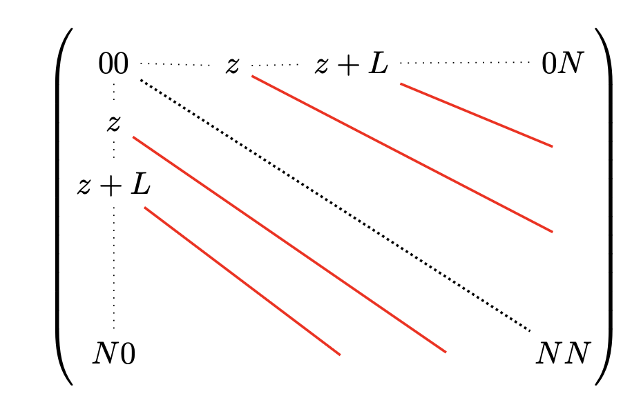
Rust/PyO3 example
Encoder flow
Suppose we receive some text \(T\) containing symbols to be encoded.
For each \(t_i \in T\), obtain its numeric representation \(z_i\). \[ z_i \in [0,L) \] Then we map each \(z_i\) to a pair of matrix coordinates \((x_i, y_i)\) such that:
First, we pick a random \(x_i \in [0,N)\) (e.g., horizontal coordinate in a matrix)
Then, we randomly pick some \(y_i \in [0,N)\) such that: \[ x_i - y_i = z_i (\mod L) \]
Rust/PyO3 example
Encoder flow
Having thus obtained a sequence \(\{(x_i, y_i), \, i \in [0, |T|) \}\), we now apply permutations \(\sigma_k: [0,N) \rightarrow [0,N), \, k=1,2\): \[ \text{ciphertext } (\xi,\eta) := (\sigma_j(x),\sigma_{j+1}(y)) \] where \[ \sigma_j = \begin{cases} \sigma_1, \; \text{if}\; \phi_j=0,\\ \sigma_2\; \text{otherwise} \end{cases} \]
Rust/PyO3 example
Decoder flow
Below are steps executing during decoding phase:
Receive encoded ciphertext \(\{(\xi_i, \eta_i)\}\).
Apply inverse permutations \(\sigma_j^{-1}, \sigma_{j+1}^{-1}\): \[ (x_i,y_i) = (\sigma_j^{-1}(\xi_i), \sigma_{j+1}^{-1}(\eta_i)) \]
Find \(z_i\): \[ z_i = x_i - y_i \; (\mod L) \]
Rust/PyO3 example
Implementation: PyO3
- Rust bindings for Python extension modules
Users
- Qiskit https://www.ibm.com/quantum/qiskit
- Python Cryptography package https://github.com/pyca/cryptography
- Scallop https://www.scallop-lang.org
- HuggingFace Tokenizers https://github.com/huggingface/tokenizers
Rust/PyO3 example
Rust/PyO3 example
Encoding
// Generate random permutation of N integers
let mut numbers: Vec<usize> = (0..N).collect();
let mut rng = thread_rng();
numbers.shuffle(&mut rng);
let permutation = numbers;
// Generate pairs for each z
let mut pairs = Vec::with_capacity(zs.len());
for &z in &zs {
// Generate random x between 0 and N-1
let x = rng.gen_range(0..N);
// Compute y such that x - y = z (mod L)
let y = if x >= z {
(x - z) % L
} else {
((x + L) - z) % L
};
// Apply permutation to x and y
let px = permutation[x];
let py = permutation[y];
pairs.push((px, py));Rust/PyO3 example
Decoding
// Create inverse permutation
let mut inverse = vec![0; N];
for (i, &p) in permutation.iter().enumerate() {
inverse[p] = i;
}
// Recover z for each pair
let mut zs = Vec::with_capacity(pairs.len());
for &(px, py) in pairs {
// Apply inverse permutation to get x and y
let x = inverse[px];
let y = inverse[py];
// Compute z = x - y (mod L)
let z = if x >= y {
(x - y) % L
} else {
((x + L) - y) % L
};
zs.push(z);
}Rust/PyO3 example
Distributed computing
Distributed computing
Types
- Cluster computing: collection of similar workstations
- Grid computing: federation of different computer systems
- Cloud computing: provide the facilities to dynamically construct an infrastructure and compose what is needed from available services. Not only providing lots of resources.
Distributed computing
Original Beowulf cluster at NASA (1994)
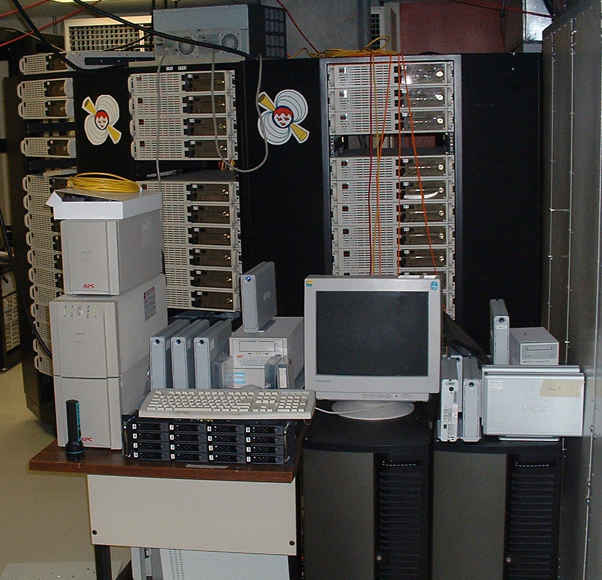
Distributed computing
Beowulf cluster diagram
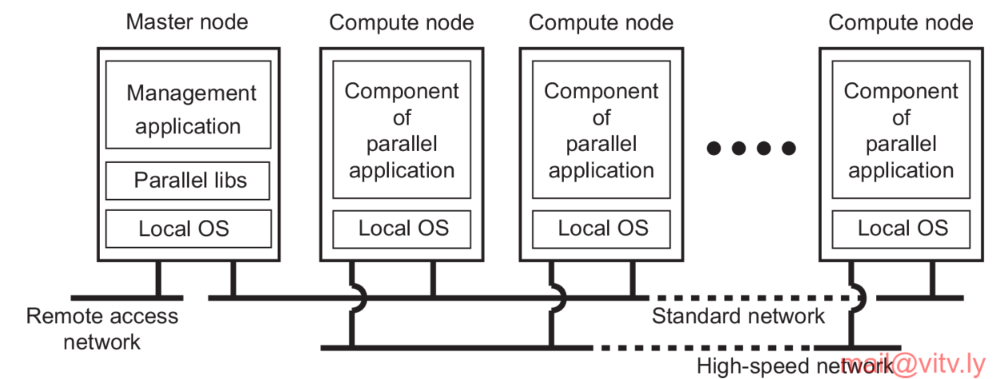
Distributed computing
Grid architecture diagram (Foster et al. 2001)
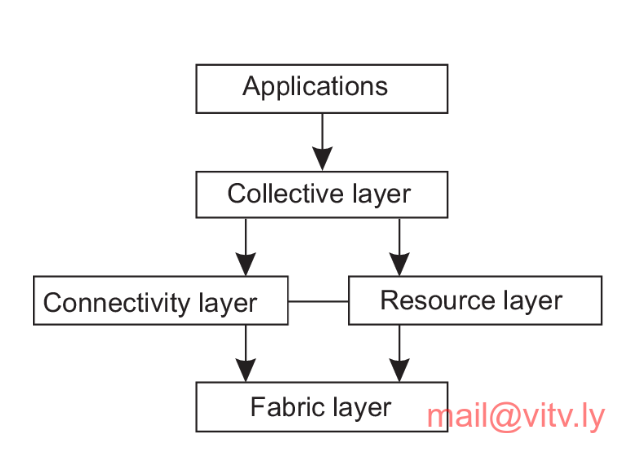
Notation
- fabric: interfaces to local resources at a specific site
- connectivity: communication protocols for supporting grid transactions that span the usage of multiple resources
- resource: responsible for managing a single resource
- collective: handling access to multiple resources and typically consists of services for resource discovery, allocation and scheduling of tasks onto multiple resources, data replication, and so on
- application: applications that operate within a virtual organization
Distributed computing
Cloud architecture
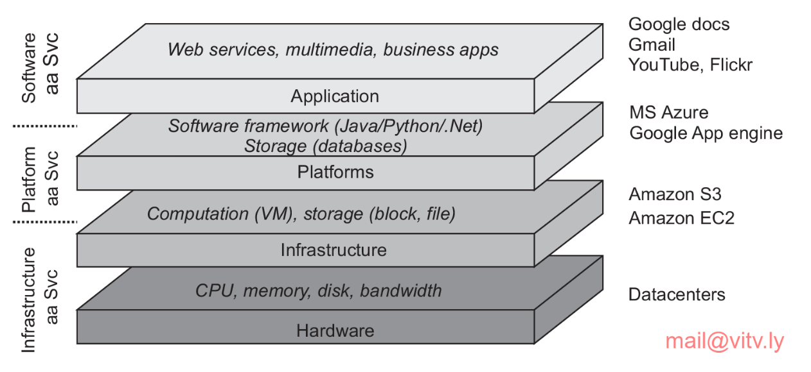